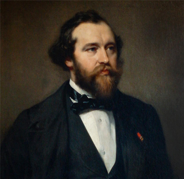

Adolphe Sax, nascido Antoine-Joseph Sax em 6 de novembro de 1814, foi um renomado inventor e fabricante de instrumentos musicais belga. Ele é mais conhecido por ter inventado o saxofone, um instrumento de sopro que se tornou fundamental em diversos gêneros musicais, especialmente no jazz. Sax também fez contribuições significativas para o desenvolvimento de outros instrumentos de sopro, como o clarinete e a flauta. Sua inovação e habilidade técnica deixaram um legado duradouro na música, e ele é lembrado como um dos grandes pioneiros na história dos instrumentos musicais.